Os Santos
Conheça as grandes testemunhas de fé dos séculos XIX, XX e XXI, entre santos canonizados e causas em andamento
Filtrar por categoria →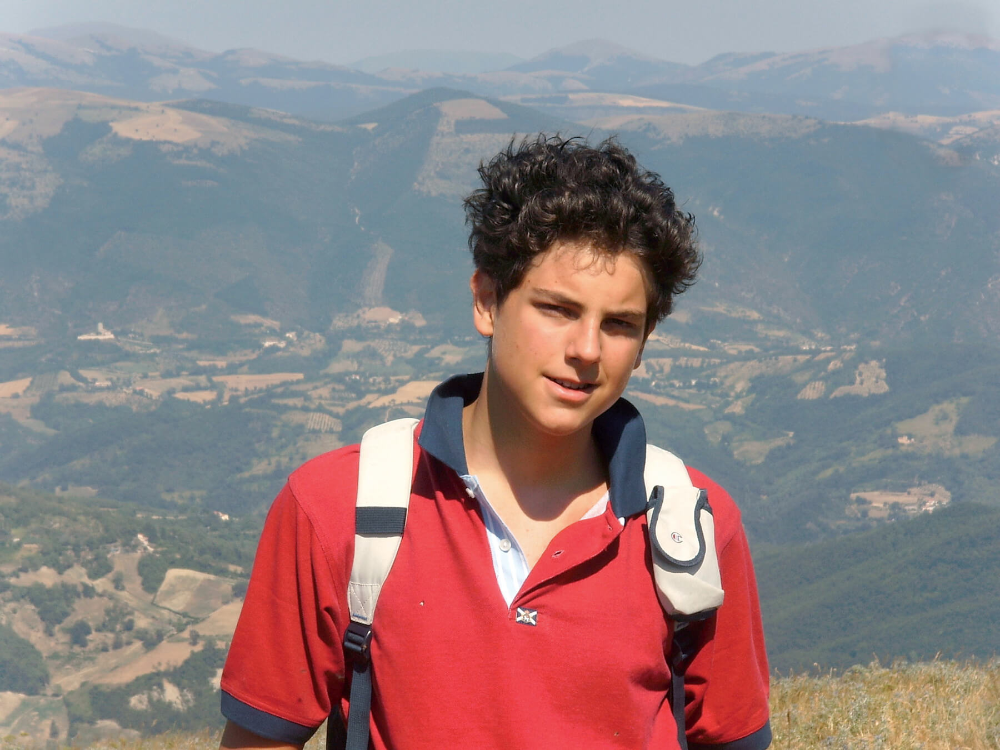
2025Jovem · Tecnologia · Eucaristia
São Carlo Acutis
1991 – 2006 · Milão, Itália
O "influencer de Deus", apaixonado pela eucaristia, que documentou os milagres eucarísticos e morreu de leucemia aos 15 anos.
 2016
2016
Mártir · Cristero · México
São José Sánchez del Río
1913 – 1928 · Michoacán, México
O "Joselito", adolescente de 14 anos que morreu mártir durante a Guerra Cristera gritando "Viva Cristo Rey!"
 2016
2016
Serviço · Caridade · Altruísmo
Santa Teresa de Calcutá
1910 – 1997 · Skopje / Calcutá
A "Santa das Sarjetas", fundadora das Missionárias da Caridade, serviu os mais pobres entre os pobres durante décadas.
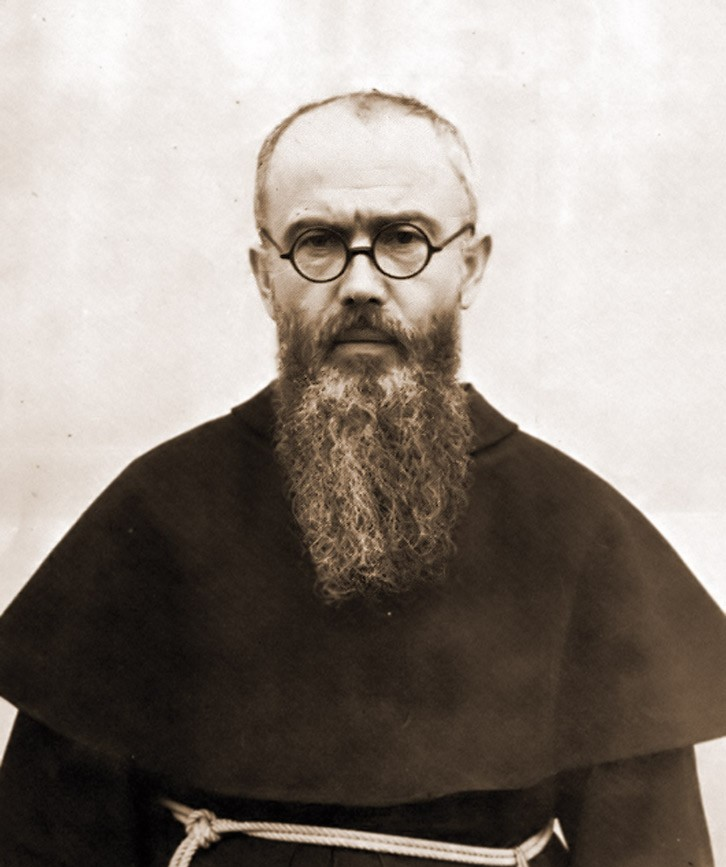
1982Mártir · Franciscano · Polônia
São Maximiliano Kolbe
1894 – 1941 · Zdunska Wola, Polônia
Frade franciscano que morreu como mártir no campo de extermínio de Auschwitz, oferecendo-se para morrer de fome no lugar de um pai de família.
Vocação · Doação · Amor
Santa Gianna Beretta Molla
1922 – 1962 · Magenta, Itália
Pediatra e mãe que sacrificou a própria vida para salvar sua filha ainda no ventre materno.
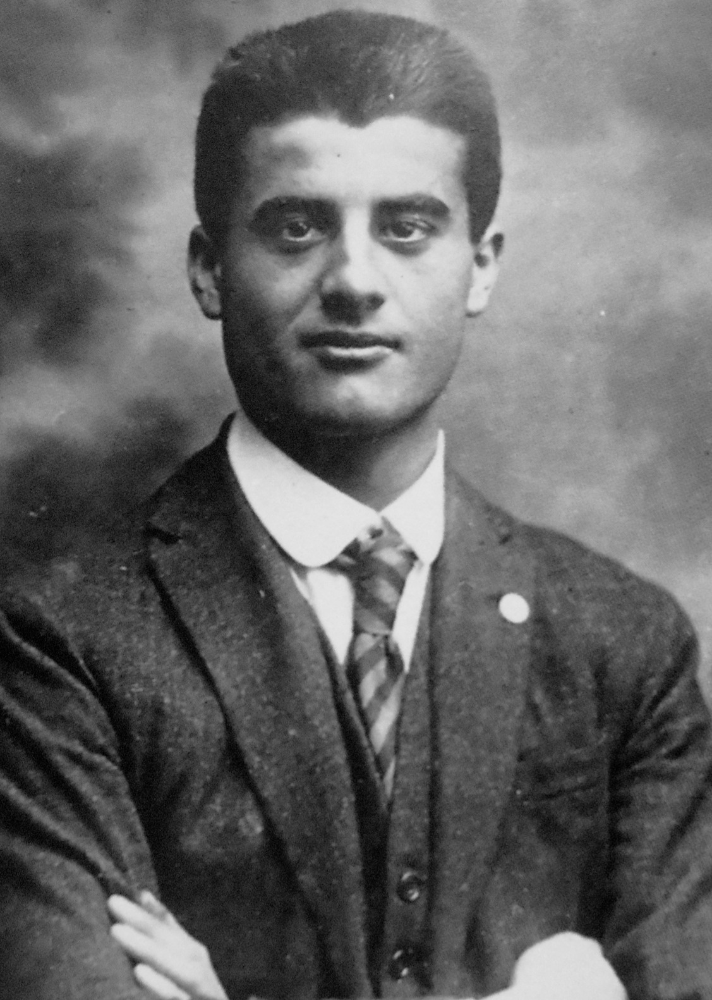
2025Justiça · Sacrifício · Oração
São Pier Giorgio Frassati
1901 – 1925 · Turim, Itália
Jovem universitário que vivia na alegria, no esporte e no serviço aos pobres. "Homem das Oito Bem-aventuranças".
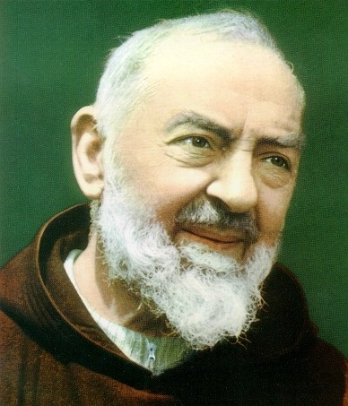
2002Místico · Estigmas · Capuchinho
São Pio de Pietrelcina
1887 – 1968 · Pietrelcina, Itália
O "Padre Pio", frade capuchinho que carregou as chagas de Cristo por 50 anos e tornou-se um dos maiores confessores do século XX.
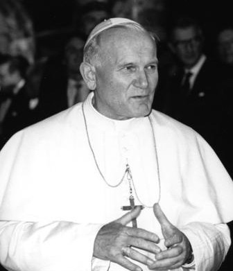
2014Juventude · Peregrino · Misericordioso
São João Paulo II
1920 – 2005 · Wadowice, Polônia
"O Grande" — O Papa que mudou o mundo. O papa polonês que desafiou o comunismo, sobreviveu a um atentado, perdoou seu agressor e conduziu a Igreja pelo maior pontificado do século XX.
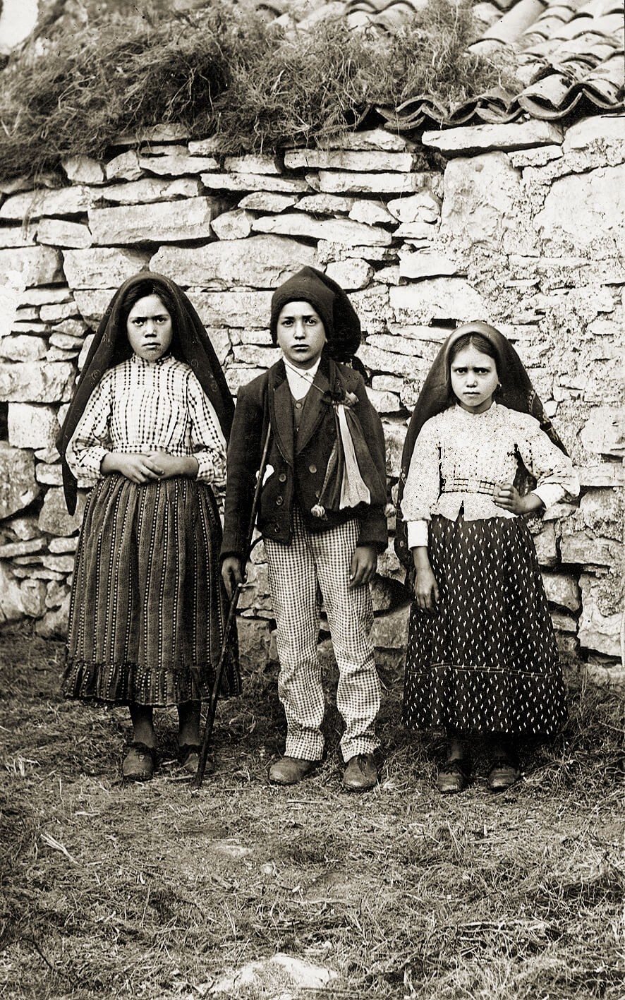
2017Contemplação · Pureza · Testemunho
Lúcia, Francisco e Jacinta
"Os Três Pastorinhos de Fátima" foram as crianças portuguesas Lúcia de Jesus e seus primos, os irmãos Francisco e Jacinta Marto. Eles testemunharam as aparições do Anjo de Portugal e da Virgem Maria em 1916 e 1917, na Cova da Iria.
 2000
2000
Religiosa · África · Perdão
Santa Josefina Bakhita
c. 1869 – 1947 · Sudão / Itália
Da escravidão no Sudão à santidade na Itália — um testemunho extraordinário de perdão e amor a Deus.
 2000
2000
Religiosa · Misericórdia · Polônia
Santa Faustina Kowalska
1905 – 1938 · Polônia
A humilde religiosa polonesa da Divina Misericórdia — cuja mensagem de confiança e perdão alcançou milhões no mundo moderno.
Religiosa · Fundadora · Brasil
Santa Dulce dos Pobres
1914 – 1992 · Brasil
O "Anjo Bom da Bahia" — cuja trajetória de caridade incondicional, gestão social e fé profunda na periferia de Salvador a tornou a primeira santa nascida no Brasil.
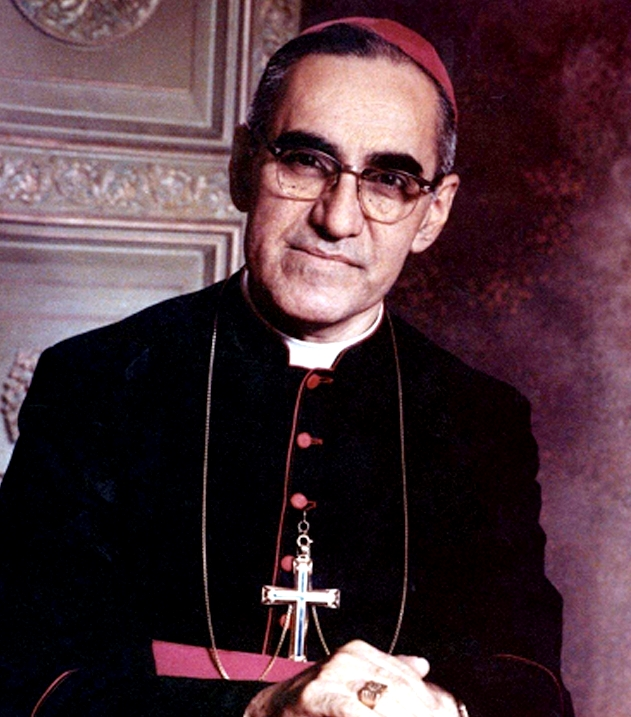
2018Bispo · Mártir · El Salvador
São Óscar Romero
1917 – 1980 · El Salvador
O "Bispo dos Pobres" — cuja defesa incansável da dignidade humana, da justiça social e dos mais vulneráveis o levou ao martírio durante a celebração da Santa Missa.
 2022
2022
Religioso · Fundador · Místico
São Charles de Foucauld
1858 – 1916 · Argélia
O "Irmão Universal" — ex-oficial do exército que encontrou a santidade na vida oculta de Nazaré e no deserto do Saara, vivendo em fraternidade radical entre os tuaregues.
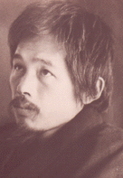
2021Servo de Deus · Leigo · Místico
Takashi Nagai
1908 – 1951 · Japão
O "Anjo de Nagasaki" — médico radiologista e sobrevivente da bomba atômica que, de sua cabana de dois tatames, tornou-se um farol de reconciliação, ciência e profunda entrega espiritual.
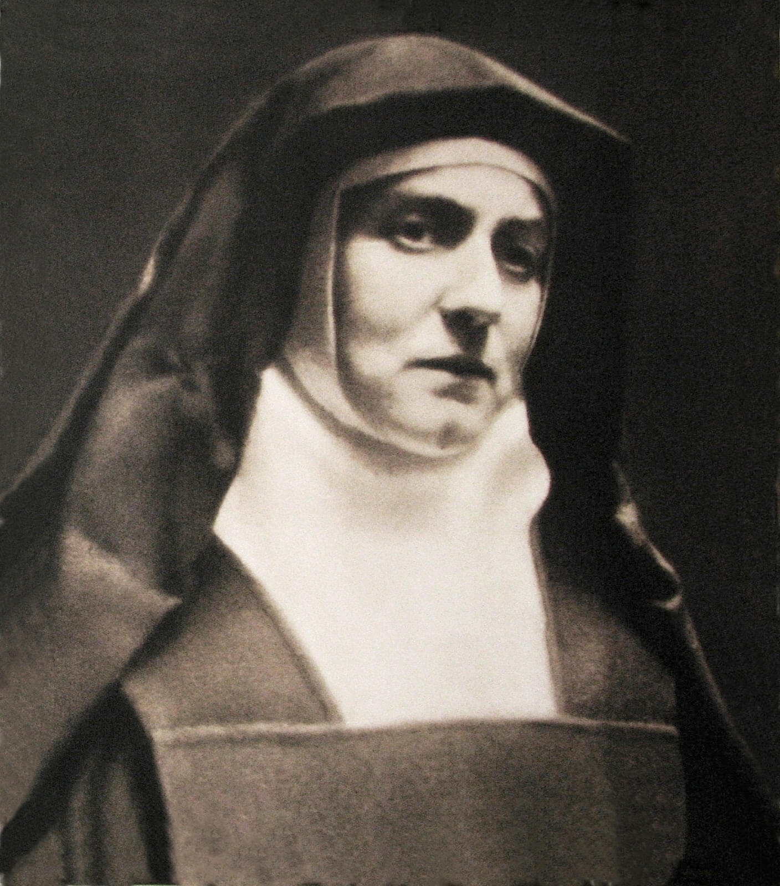
1998Santa · Mártir · Filósofa
Santa Teresa Benedita da Cruz
1891 – 1942 · Alemanha
Edith Stein, intelectual brilhante convertida do judaísmo ao catolicismo, tornou-se carmelita com o nome de Teresa Benedita da Cruz. Morta em Auschwitz durante a perseguição nazista, uniu fé, razão e testemunho heroico até o martírio.
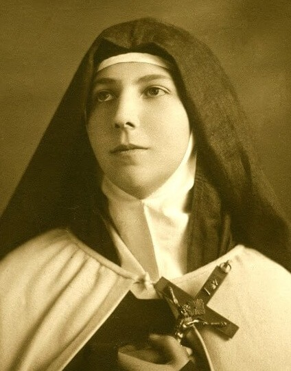
1993Santa · Carmelita · Mística
Santa Teresa dos Andes
1900 – 1920 · Chile
Juanita Fernández Solar, jovem chilena que abraçou a clausura carmelita sob o nome de Teresa de Jesus. Sua vida curta, marcada por uma fé intensa e alegre, tornou-se um modelo de santidade contemplativa para a juventude.
 2018
2018
Papa · Religioso · Reformador
São Paulo VI
1897 – 1978 · Itália
Giovanni Battista Montini, o Papa que conduziu o Concílio Vaticano II à conclusão e guiou a Igreja através das transformações da modernidade com sabedoria, diplomacia e profunda fidelidade ao Evangelho.
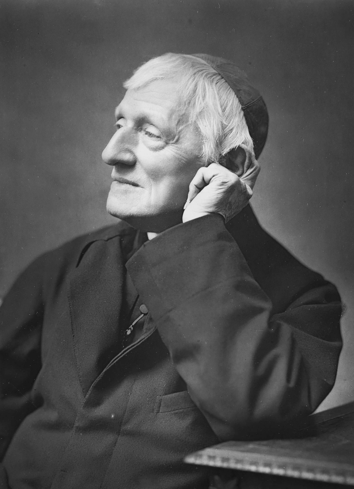
2019Religioso · Teólogo · Místico
São John Henry Newman
1801 – 1890 · Reino Unido
Figura central do pensamento católico do século XIX, Newman foi um intelectual brilhante que, através de uma busca incansável pela verdade, converteu-se ao catolicismo, tornando-se um mestre da consciência e da santidade cotidiana.
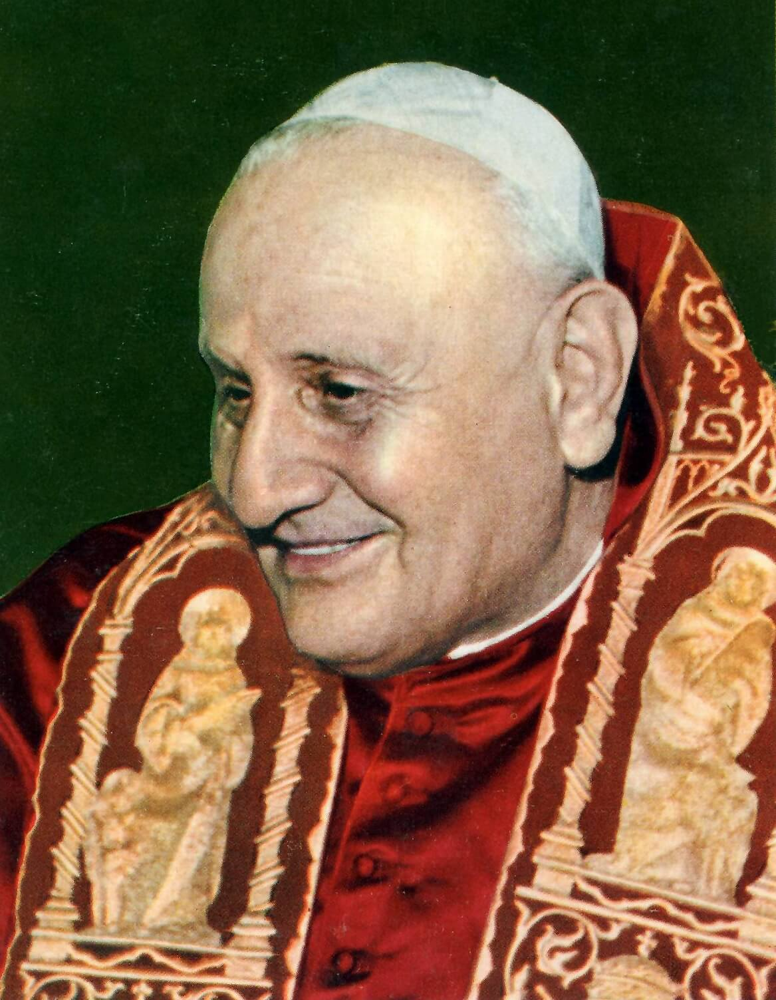
2014Papa · Reformador · Religioso
São João XXIII
1881 – 1963 · Itália
Conhecido como o "Papa Bom", Angelo Roncalli surpreendeu o mundo ao convocar o Concílio Vaticano II, iniciando um processo de renovação e abertura da Igreja aos desafios do mundo contemporâneo.
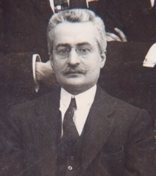
1987Médico · Cientista · Leigo
São Giuseppe Moscati
1880 – 1927 · Itália
Conhecido como o "médico dos pobres" em Nápoles, dedicou sua vida científica e profissional a servir os enfermos com caridade heroica, unindo fé profunda e excelência médica.
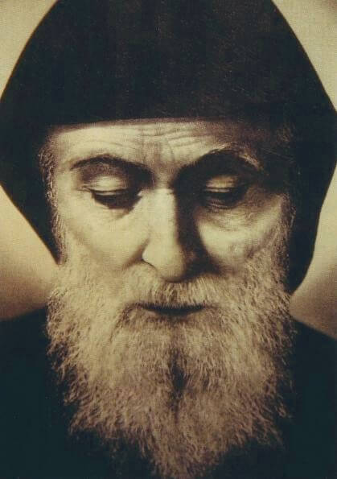
1977Monge · Eremita · Místico
São Charbel Makhlouf
1828 – 1898 · Líbano
Monge maronita que viveu décadas em retiro absoluto como eremita nas montanhas do Líbano. Famoso por sua vida de santidade austera e pelos inúmeros milagres atribuídos à sua intercessão após a morte.
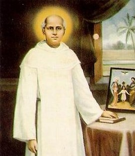
2014Sacerdote · Reformador · Educador
São Kuriakose Elias Chavara
1805 – 1871 · Índia
Reformador e pioneiro da educação na Índia, fundou a primeira congregação religiosa indígena (CMI). Teve papel vital na renovação da Igreja Siro-Malabar e na promoção social de comunidades marginalizadas.
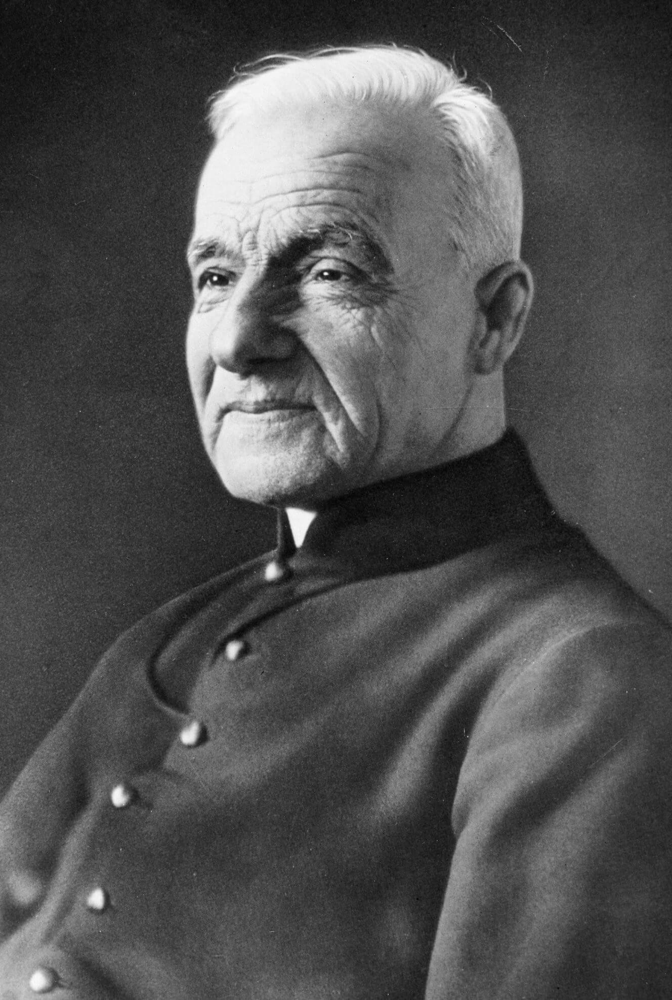
2010Religioso · Milagreiro · Porteiro
São André Bessette
1845 – 1937 · Canadá
Humilde religioso da Congregação de Santa Cruz, tornou-se conhecido como o 'milagreiro de Montreal' por sua profunda devoção a São José e sua caridade incansável com os doentes e aflitos.
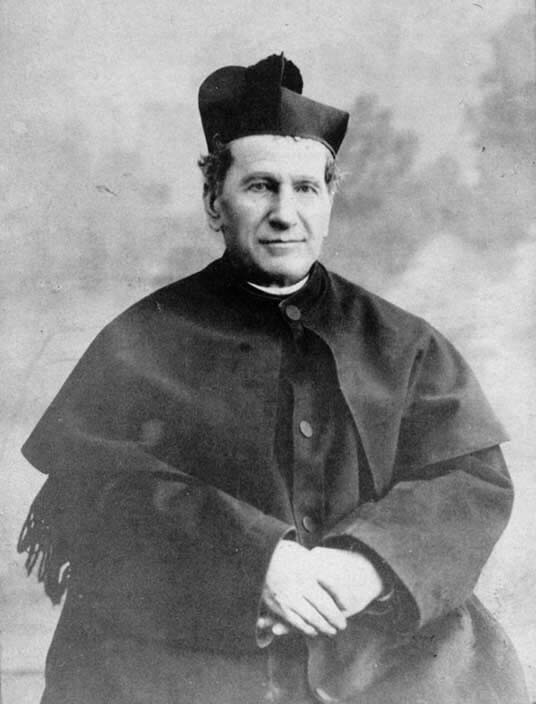
1934Sacerdote · Educador · Fundador
São João Bosco
1815 – 1888 · Itália
Pai e mestre da juventude, dedicou sua vida à educação e à evangelização de jovens pobres e abandonados através do 'Sistema Preventivo'.
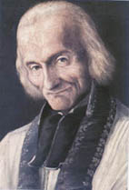
1925Sacerdote · Confessor · Cura d'Ars
São João Maria Vianney
1786 – 1859 · França
O humilde 'Cura d'Ars', modelo de sacerdote para o mundo todo, conhecido por seu dom extraordinário na direção espiritual e no sacramento da confissão.
 1933
1933
Religioso · Místico
Santa Bernadette Soubirous
1844 – 1879 · França
Vidente de Lourdes, a quem a Virgem Maria apareceu na Gruta de Massabielle. Viveu uma vida de profunda humildade, silêncio e obediência na vida religiosa.